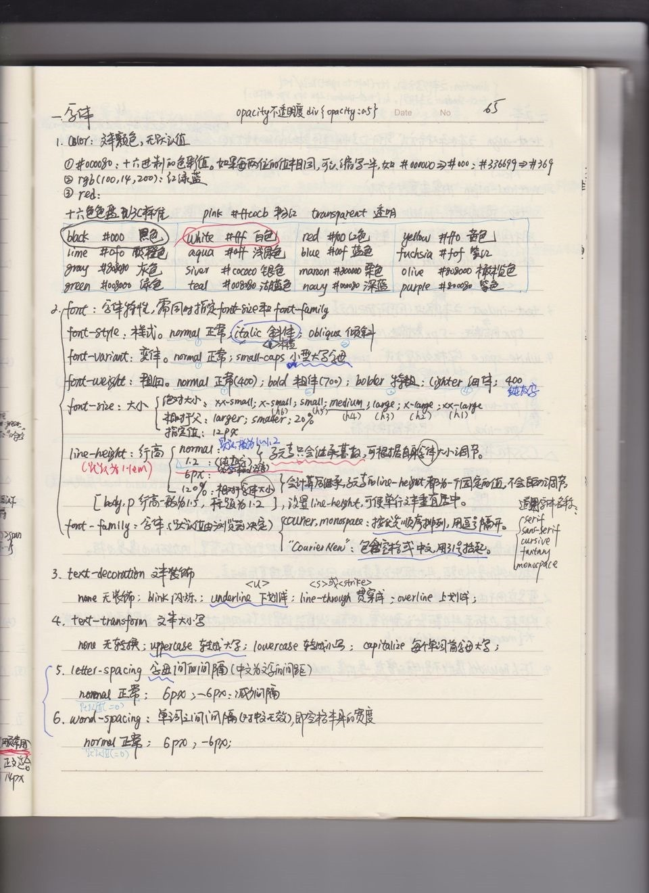

返回目录 阅读全文
CSS字体属性定义字体，加粗，大小，文字样式。
一、所有CSS字体属性
- font：在一个声明中设置所有的字体属性
- font-family：指定文本的字体系列
- font-size：指定文本的字体大小
- font-style：指定文本的字体样式
- font-variant：以小型大写字体或者正常字体显示文本。
- font-weight：指定字体的粗细。
1、serif和sans-serif字体之间的区别

 在计算机屏幕上，sans-serif字体被认为是比serif字体容易阅读
在计算机屏幕上，sans-serif字体被认为是比serif字体容易阅读
2、CSS字型
在CSS中，有两种类型的字体系列名称：
- 通用字体系列 - 拥有相似外观的字体系统组合（如 "Serif" 或 "Monospace"）
- 特定字体系列 - 一个特定的字体系列（如 "Times" 或 "Courier"）
通用字体系列与特定字体系列：
- Serif：Times New Roman，Georgia。指Serif字体中字符在行的末端拥有额外的装饰
- Sans-serif：Arial，Verdana。 "Sans"是指无 - 这些字体在末端没有额外的装饰
- Monospace：Courier NewLucida Console。指所有的等宽字符具有相同的宽度
二、字体系列：font-family
font-family 属性设置文本的字体系列。
font-family 属性应该设置几个字体名称作为一种"后备"机制，如果浏览器不支持第一种字体，他将尝试下一种字体。
注意: 如果字体系列的名称超过一个字，它必须用引号，如Font Family："宋体"。
多个字体系列是用一个逗号分隔指明：
p{font-family:"Times New Roman", Times, serif;}
对于较常用的字体组合，看看我们的 Web安全字体组合。
三、字体样式：font-style
主要是用于指定斜体文字的字体样式属性。
这个属性有三个值：
- 正常 - 正常显示文本
- 斜体 - 以斜体字显示的文字
- 倾斜的文字 - 文字向一边倾斜（和斜体非常类似，但不太支持）
p.normal {font-style:normal;} p.italic {font-style:italic;} p.oblique {font-style:oblique;}
四、字体大小：font-size
font-size 属性设置文本的大小。
能否管理文字的大小，在网页设计中是非常重要的。但是，你不能通过调整字体大小使段落看上去像标题，或者使标题看上去像段落。
请务必使用正确的HTML标签，就
- 表示标题和
表示段落：
字体大小的值可以是绝对或相对的大小。
1、绝对大小：
- 设置一个指定大小的文本
- 不允许用户在所有浏览器中改变文本大小
- 确定了输出的物理尺寸时绝对大小很有用
2、相对大小：
- 相对于周围的元素来设置大小
- 允许用户在浏览器中改变文字大小
如果你不指定一个字体的大小，默认大小和普通文本段落一样，是16像素（16px=1em）。
1、设置字体大小像素
设置文字的大小与像素，让您完全控制文字大小：
h1 {font-size:40px;} h2 {font-size:30px;} p {font-size:14px;}
上面的例子可以在 Internet Explorer 9, Firefox, Chrome, Opera, 和 Safari 中通过缩放浏览器调整文本大小。
虽然可以通过浏览器的缩放工具调整文本大小，但是，这种调整是整个页面，而不仅仅是文本
2、用em来设置字体大小
为了避免Internet Explorer 中无法调整文本的问题，许多开发者使用 em 单位代替像素。
em的尺寸单位由W3C建议。
1em和当前字体大小相等。在浏览器中默认的文字大小是16px。
因此，1em的默认大小是16px。可以通过下面这个公式将像素转换为em：px/16=em
h1 {font-size:2.5em;} /* 40px/16=2.5em */ h2 {font-size:1.875em;} /* 30px/16=1.875em */ p {font-size:0.875em;} /* 14px/16=0.875em */
在上面的例子，em的文字大小是与前面的例子中像素一样。不过，如果使用 em 单位，则可以在所有浏览器中调整文本大小。
不幸的是，仍然是IE浏览器的问题。调整文本的大小时，会比正常的尺寸更大或更小。
3、使用百分比和EM组合
在所有浏览器的解决方案中，设置
元素的默认字体大小的是百分比：body {font-size:100%;} h1 {font-size:2.5em;} h2 {font-size:1.875em;} p {font-size:0.875em;}
我们的代码非常有效。在所有浏览器中，可以显示相同的文本大小，并允许所有浏览器缩放文本的大小。
五、CSS3 @font-face 规则

使用以前 CSS 的版本，网页设计师不得不使用用户计算机上已经安装的字体。
使用 CSS3，网页设计师可以使用他/她喜欢的任何字体。
当你发现您要使用的字体文件时，只需简单的将字体文件包含在网站中，它会自动下载给需要的用户。
您所选择的字体在新的 CSS3 版本有关于 @font-face 规则描述。
您"自己的"的字体是在 CSS3 @font-face 规则中定义的。
1、浏览器支持
Internet Explorer 9+, Firefox, Chrome, Safari, 和 Opera 支持 WOFF (Web Open Font Format) 字体.
Firefox, Chrome, Safari, 和 Opera 支持 .ttf(True Type字体)和.otf(OpenType)字体字体类型）。
Chrome, Safari 和 Opera 也支持 SVG 字体/折叠.
Internet Explorer 同样支持 EOT (Embedded OpenType) 字体.
注意： Internet Explorer 8 以及更早的版本不支持新的 @font-face 规则。
2、CSS3 字体描述
下表列出了所有的字体描述和里面的@font-face规则定义：
- font-family：name，必需。规定字体的名称。
- src：URL，必需。定义字体文件的 URL。
- font-stretch：normal 、condensed 、ultra-condensed 、extra-condensed 、semi-condensed 、expanded 、semi-expanded 、extra-expanded 、ultra-expanded。可选。定义如何拉伸字体。默认是 "normal"。
- font-style：normal 、italic 、blique。可选。定义字体的样式。默认是 "normal"。
- font-weight：normal 、bold 、100 -900。可选。定义字体的粗细。默认是 "normal"。
- unicode-range：unicode-range。可选。定义字体支持的 UNICODE 字符范围。默认是 "U+0-10FFFF"。
3、使用您需要的字体
在新的 @font-face 规则中，您必须首先定义字体的名称（比如 myFirstFont），然后指向该字体文件。
提示：URL请使用小写字母的字体，大写字母在IE中会产生意外的结果
如需为 HTML 元素使用字体，请通过 font-family 属性来引用字体的名称 (myFirstFont)：
@font-face { font-family: myFirstFont; src: url(sansation_light.woff); } div { font-family:myFirstFont; }
4、使用粗体文本
您必须添加另一个包含粗体文字的@font-face规则：
@font-face { font-family: myFirstFont; src: url(sansation_bold.woff); font-weight:bold; }
该文件"Sansation_Bold.ttf"是另一种字体文件，包含Sansation字体的粗体字。
浏览器使用这一文本的字体系列"myFirstFont"时应该呈现为粗体。
这样你就可以有许多相同的字体@font-face的规则。
